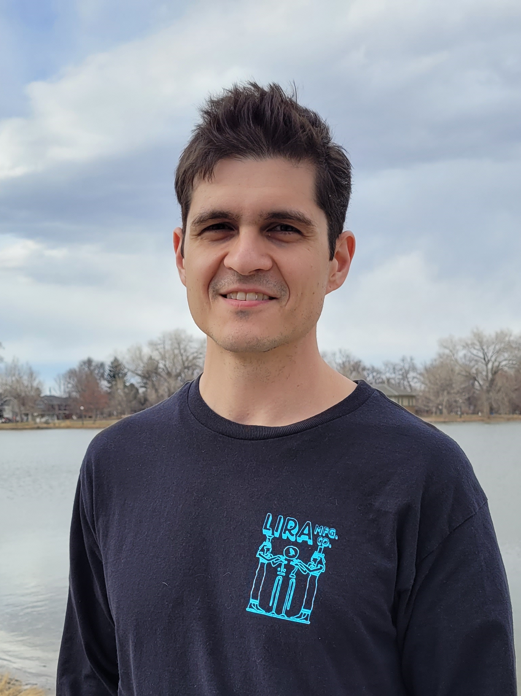

I'm the type of person that's driven by problem solving. I believe that some of our most pressing issues as a society require analytical thought, rigor, and attention to detail. This is what led me to pursue STEM education. Although I focussed on applied mathematics in college, I'm interested in all STEM fields because I believe they offer the fundamental knowledge and skill sets necessary to create solutions to our day to day issues.
- Education
-
California State University - Long Beach
Masters of Science: Applied Mathematics
Bachelors of Science: Applied Mathematics
Bachelors of Arts: Physics
- Skills
-
Software
Javascript, HTML, CSS, Node.js, Express, Axios, PostgreSQL, C++
Mathematics and Physics
Probability and Statistics, Regression Analysis, Calculus, Differential Equations, Linear Algebra, Numerical Analysis, Stochastic Processes, Analytical Mechanics, Electricity and Magnetism, Optics, Quantum Mechanics
- Experience
-
Gaming Laboratories International
Systems Test Engineer - Wheatridge, CO
May 2021 - February 2022
- Wrote, developed and reviewed test procedure documentation for systems in C and C++ .
- Reviewed large data sets to ensure all systems are working per requirements.
- Investigated test issues to determine root cause of testing discrepancy.
- Reviewed test reports for complete and accurate testing of the requirements as well as any
auxiliary impact to the system outside of the assigned requirements.
- Accessed systems resources through a virtual machine environment and remote connections.
- Utilized available time for the completion of necessary job tasks under minimal supervision.
- Maintain a master schedule of all software releases, including key post-development milestones.
- Work closely with the Software Engineering team to oversee and manage change control of complex codebase.
- Document results of Jira workflows and process audits.
- Design and implement regression tests.
- Run SQL code to assess, clean, validate and analyze large datasets.
Tutor Me Education
Programming Tutor (C++) - remote
August 2021 - December 2021
- Provided additional learning support to students taking UCLA’s fundamental C++ course.
- Reviewed lesson plans and developed lesson plans to reinforce understanding of computer science topics
- Helped students develop a conceptual understanding of data structures and algorithms.
- Reviewed variable declarations, strings, booleans, static arrays, vectors and pointers.
- Reviewed control flow using different looping methods and boolean logic.
- Reviewed class creation and I/O functionality of C++.
United States Marine Corps
Technical Controller (Sergeant) - Camp Pendleton, CA
August 2021 - December 2021
- Configured multiplexing devices.
- Planned and configured network topology.
- Connected switches, routers, hubs and end user devices in a functioning data network.
- Analyzed and stored data for network outages and stability.
- Gave presentations in front of company and battalion leaders.
- Documented procedures for hardware and software installation and use.
- Developed test solutions for network outages.
- Documented technical specifications and operating standards for telecommunications equipment.
- Implemented controls to provide security for operating systems, software, and data.
- Projects
- Developed a salary prediction web application which generates linear regression models from .csv files. The application uses Javascript, HTML, CSS, Node.js, Express, Axios, PostgreSQL, Bcrypt, and Chart.js.
- Wrote an RSA Encryption program in C++. The program makes use of I/O functions, control flow, pointers, references, modular arithmetic, Extended Euclid Algorithm, boolean variables, and logic.
- Designed a stochastic process simulation using matlab. The simulation models pedestrian movement using stochastic processes.
- Prepared a technical analysis of period finding algorithms in quantum computing for the use of decrypting RSA encryption.
- Hobbies
Playing Guitar, Gaming, Boxing, Find great hiking spots in Colorado, Watching Anime, Reading Comic Books
- References
- Available on request